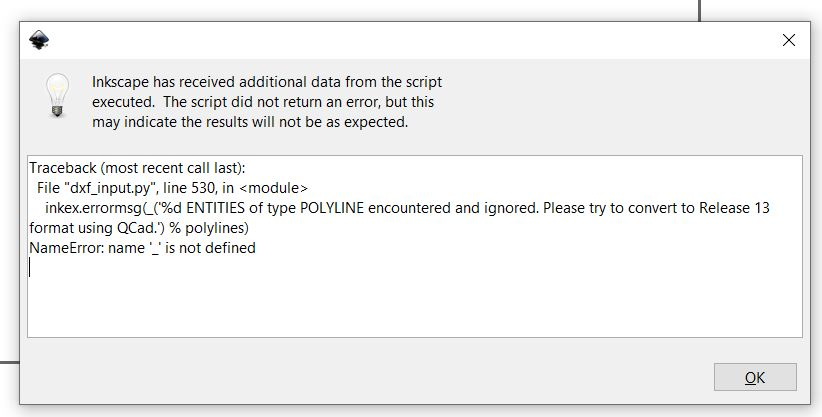

For this project I decided to work with Inventor, this is mainly because most big companies use either Inventor or Solidworks and I want to use this opportunity to further my skills with those programs. Fusion 360 is more user friendly and easier to work with for small projects like this one. Now I just needed an idea for a project, I started by looking through google images and found some good ideas but after watching a video about parametric design in Fusion 360 (Fusion360: Automatically sized finger-joints) I stumbled upon a video about a laptop stand and liked the idea very much (Designing a Lasercut Laptop Stand with Fusion 360). Now that I had an idea for a project I made a VERY rough sketch outlining the basic parameters that I would need.

Now I opened Inventor and started adding user perameters that I would need to draw the feet of the laptop stand.

Usign these parameters I finished drawing the foot and for parameters that were not user defined I defined them so that they would be dependant on the user defined parameters.

After finishing the foot and a basic top plate I created a new assembly and started putting the first parts into the assembly
but I soon ran into some problems, for starters after importing the user defined parameters the only way to change them was to go
into the original part and change the parameters there, which is not ideal for a parametric design. Another problem was that
when editing the top plate the best method for cutting the fingers is using the combine tool, which after a quick google search
is not available when editing parts in an assembly.
I started looking around the internet for parametric design using Inventor and found a great video explaining top-down Designing
techniques using Inventor (Inventor Advanced Assembly Techniques)
After watching the video I decided that the best method for my project would be to use solid-body modeling, which is essentially
how Fusion 360 works.
Now I started a new drawing and started defining all the basic parameters that I would need and would be likely to change depending
on the size of the laptop. When new parts are needed in the drawing the extrution setting are set to "New Solid" so there will be
many solid bodies in the single part file.

These are all the parameters that I have needed to define myself while drawign the feet and top plate of the laptop stand.
Next week I will draw the supports and finalize the design, then go to FabLab to lasercut the laptop stand and assemble the final product.
The goal for this week is to finish the CAD drawing that is missing supports between the legs and then prepare the
files for laser cutting and cut them out at FabLab Reykjavík.
The first thing I did this week was to draw the main support beam between the two feet. After some consideration I decided
how I wanted to dimention the support, I first started by offsetting a plane from the back of the legs so the support would not be
all the way at the back of the stand.

This however lead to some problems when changing the base parameters, most notably the width of the support did not change with the width between the legs.
This was however fixed quite easily with two collinear constraints on either side of the support, I also experimented with the other dimentions until I was happy with the way the main support was changing with the rest of the drawing. These were the final dimentions that I settled on.
To make sure that the top plate of the stand would not bend to much in use I also added some top plate supports at the front and back of the stand. These were made much the same way as the main support though these are smaller and lie perpendicular to the top plate to provide the maximum rigidity.
I then added one more support for the legs a little bit in front of the main support
To make sure that the laptop stand would not break (and for fun), I did a VERY basic finite element analysis, I did not specify the element type or define the mesh, I just assumed Inventor would automatically use elements and a mesh that was good enough, this is therfore probably pretty inacurate but does however give a very rough idea of how the laptop stand will handle the load of a laptop and hands. The scale of the displacement has also been increased to show how the final product might displace.
Now the drawing was complete.

To prepare the drawings for lasercutting I started by splitting the drawing up into components, so I created a new part from every part in the final drawing by right clicking on the solid in the tree view and selecting "Make part".
For laser cutting I needed to export the faces the I wanted to lasercut as DXF files. I thought this would be much easier in Inventor than in Fusion 360 as in Inventor you can right click on any face and select "export face as..." and export as a DXF file. This however was not the case as once I had all the DXF files that I needed Inkscape would not open them.
I tried everything I could think of from changing the DXF file output settings to different versions of DXF files to importing the drawings into Autocad and exporting from there, I finally got a DXF file into Inkscape after importing the DXF into Fusion 360, then exporting it from there (ironic I know ¯\_(ツ)_/¯) but then I encountered another problem, I had used a spline to model the curve on the main support which is a curve of degree 5 but Inkscape can only read curves of degree 3 or less (source). The solution was to import the file into Autocad and use the "Edit spline" command and convert the spline into a polyline with a precision of 10. While searching for the solution for that problem I also found a solution to export DXF files from inventor that Inkscape could read. I first created a drawing view of the part and made sure to have the scale at 1:1
I then saved a copy of the drawing as a dxf, making sure to open the save options and check the box that says "export model geometry only" is checked so that the border of the technical drawing does not export with the part.

Now I could import my DXF files into Inkscape. Once they were in Inkscape I needed to fix the drawings as when the files are imported there is often a translation error and the DXF file is not a continuous closed curve even though it seems that way. To fix this I used the same method as in the following video provided by Hafliði, DXF Segmented Line Fix in Inkscape 2.
Once all the files had been fixed I arranged them into 600x300mm boxes as that is the maximum size of the laser cutting machine, unfortunately the feet of the laptop stand are 320x330mm so they will need to be cut in the bigger laser cutting machine which has a workable area of 1010x710mm

I also added some text onto the top plate, the laser cutting machine automatically determines wether it is supposed to cut or engrave based on the line
thickness, for 600 dpi settings which we are using the machine cuts all lines that are smaller than 0.125mm but engraves lines that are
thicker than that, so by adding the text the machine automatically knows to engrave that part of the drawing.
Now it was time to go to FabLab and cut out the parts. To start with I made sure that the height of the laser was correct, as if the laser is to high or
to low the laser will not cut as cleanly, to make sure the height is correct we use a metal piece that is supposed to barley touch the material.
After correcting the height I set the home point to the top left corner of the material and the went to the computer and opened the pdf file that I wanted to cut, to send the file to the printer you press print like you would with a normal printer, make sure that the laser cutter is selected, and click properties, then you can change the lasercutting settings.

The material that I am working with is 4mm wood and the settings for this material in this printer is:
This is the correct job so I started the job.
This is the final product.
Have you ever wanted to use your laptop while in bed and just found it to be a big pain, you don't know how to position the laptop and then you have to be able to type and it is just a big mess.
Well there is no more need to worry, intoducing the bed laptop stand! With it's parametric design it can easily be tailored to your size and needs, the stand makes typing on your laptop in bed easy and fun!
Here are all the design files used in this project: Design Files - Project 2
laser cut press fit kit - fablab press fit projects - lasercut pressfit diy - combine command inventor assembly - parametric assembly inventor - autocad 2018 dxf export format - dxf from inventor to inkscape - convert spline to polyline inventor